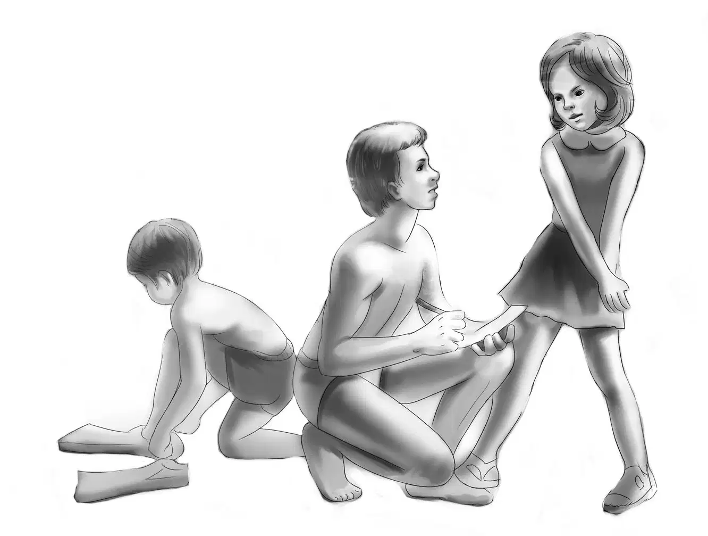
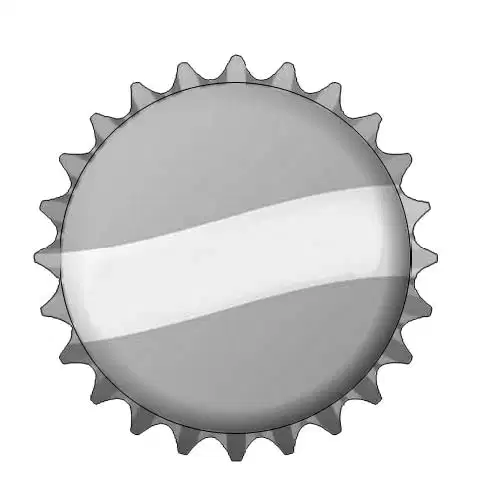
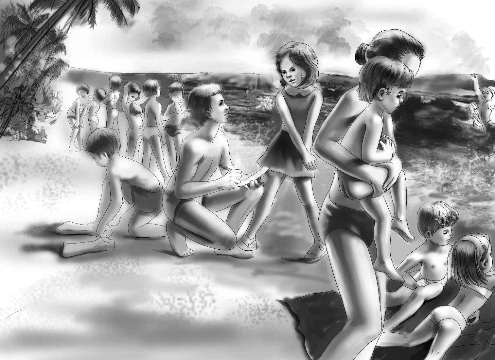
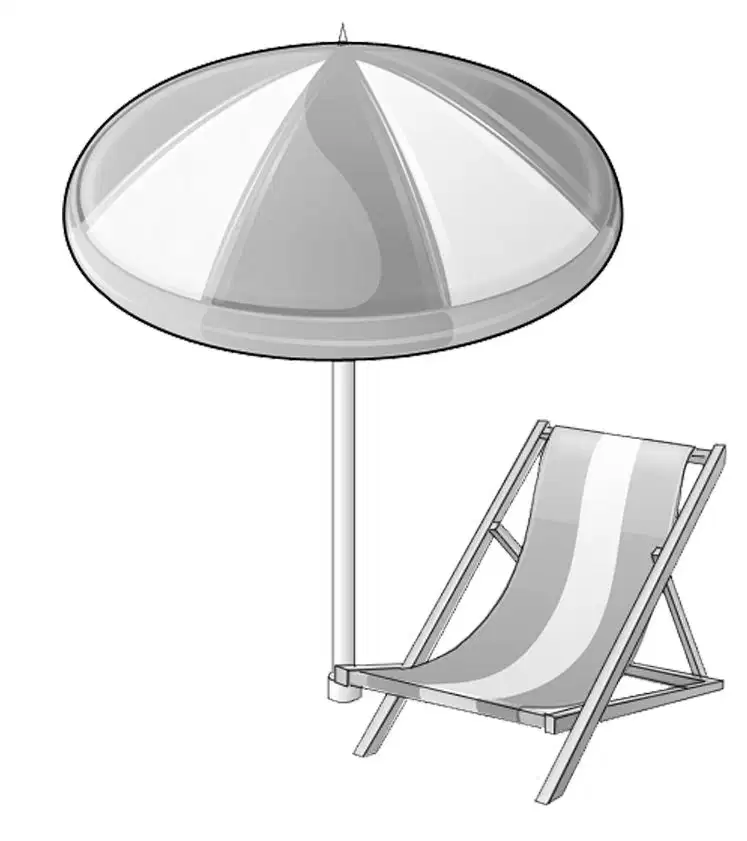
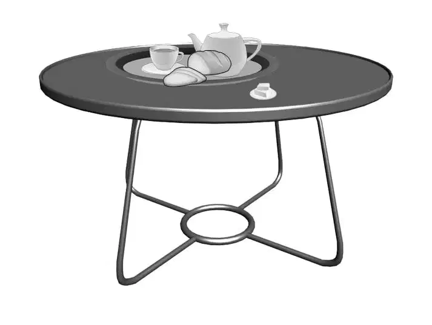
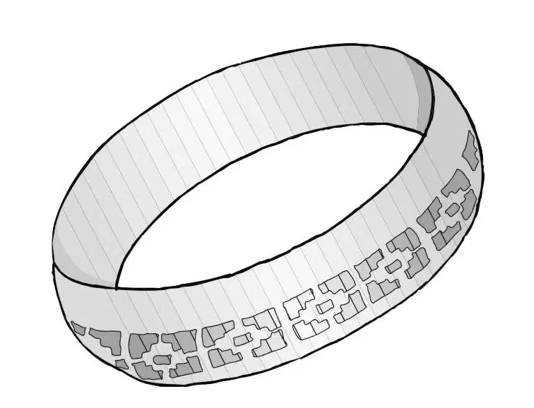

At last Jessie said, “Let’s do the dishes and go for a swim.”
Violet stood up on the sand and took her tray. She said, “You know, I can’t seem to forget Mr. Lee. He seems so interesting. And he comes past here every day with his dog, he says. We’ll see a lot of him. Henry, what do you think he had in his hand? I saw a dial with a pointer. It was part of the box fastened near the top of the handle.”
Benny had an idea. “Is it some sort of Geiger counter?” he asked.
“No,”said Henry decidedly.“Don’t you remember the man at the uranium mine out at Aunt Jane’s ranch? He was looking for uranium with a Geiger counter. There isn’t any uranium on the beach, that’s sure. This was something quite different.”

Benny said, “I’ll just have to ask Mr. Lee.”
The Aldens all went in with their trays.
“Don’t we have to go grocery shopping, Jessie?” Violet asked as she dried the spoons.
“Yes, we do,” agreed Jessie. “I have looked through the refrigerator and shelves. There are one or two things we need. Milk for one thing. Ours is almost gone.”
“We can’t go swimming too soon after eating, anyway,” Benny said. “We can do our shopping in town and then swim when we get back. It’s only a quarter of a mile to town.”
“It’s early for an adventure in town,” Henry said. But he was ready to go, too.
The Aldens put on sandals and locked the door.There stood Henry’s blue car.They all climbed in, and off they went.
They did not really need the car. Beachwood was very small, and there was just one long street. Henry drove slowly along Main Street. First came the stores, then houses began to appear on both sides. There was one big brick house with three stories and a few new houses, each with only one story.
Nothing seemed unusual until Benny said, “Oh, look at that house. It is almost a castle.”
“Isn’t it huge!” said Jessie. “It looks empty to me. There are no curtains in the windows at the front, even in the towers.”
Henry slowed down. He said, “I wonder who built a house like that in this small town? It must have looked old-fashioned even when it was new.”
Benny said,“It must have been somebody with a lot of money. Look at those towers! One, two, three, four, five towers. Nobody would buy a house like that nowadays.”
“It has a sad look,” Violet said. “All the new little houses look so different—like any village houses.”
Henry drove very slowly down the whole of Main Street and back again. The Tower House, as all the Aldens called it, was the only house of its kind in town.There was the library, the schoolhouse, the drugstore, the fire station, and the town hall. But even the town hall was smaller than the house with the towers.
“I wonder if there are stories about that house?”Benny said as he looked back at it. “I should think the people of Beachwood would make up stories about it. I could myself. Couldn’t you, Violet?”
Yes,I could,”agreed Violet, smiling.“It would be about a fairy princess held prisoner in one of the towers until she grew to be an old woman.”
“We’d better keep our ears open, anyway,” Benny said.“I’m sure there is something mysterious about that place.”
“Let’s do our shopping,” Jessie suggested.
“I’m ready for a swim,” Henry added.

At the supermarket, the girls bought bread, milk, bacon, hamburger, frankfurters, and a big box of dry mashed potatoes. When Henry started to pay for the groceries, he was surprised to find a small box of tea and a jar of dry coffee.
Jessie explained, “I thought we might have company sometime who might like tea or coffee. It’s good to have some for times like that.”
Violet, Benny, and Henry knew Jessie was thinking of the old gentleman, Mr. Lee. But they didn’t say so to Jessie.
Henry drove back to the beach. The groceries were soon put away.
By the time the Aldens stepped down onto the sand, the beach was full of people. They could see different colors of swimsuits far up and down the beach. Some people were in the water and some were lying on the beach to get a tan. Children were screaming just for the fun of it.
The Aldens joined the swimmers and spent the rest of the morning in the cool salt water.
That evening, Benny thought about walking over toward Beachwood. Would there be any lights in the old house with the five towers? Maybe he was trying too hard to find a mystery.
The next morning, early, Benny found someone had set up a chair on the beach. He smiled when he found a tray all set with a teacup, a few strips of bread and butter on a small plate, and a fat black teapot. Already, it seemed, Mr. Lee was part of the beach family.
The Aldens waited. They were not disappointed.As they finished breakfast on the sand, they saw Mr. Lee and his dog coming up the beach. Jessie ran into the kitchen to set the water boiling on the stove. She waited, however, to see whether Mr. Lee wanted tea or coffee.

As the old gentleman reached the Aldens, he saw the chair and smiled. “I wonder if this is for me?” he asked, sitting down and looking at the family.
Yes, it is,” said Benny.“I suppose you have had breakfast?”
Yes, I eat very early,”Mr.Lee replied. “I don’t sleep too well.”
Jessie called from the door,“Could you drink another cup of tea or coffee?”
Yes, indeed. Tea, please. An Englishman can always drink a cup of hot tea.”
Jessie noticed the word “hot” so she made sure that the little teapot was hot before she poured in the boiling water. She carried the tray to the beach.
She said, “I read somewhere that the English like milk instead of cream in their tea.”
“That is correct, young lady,” said Mr. Lee. He drank the hot tea and ate all the bread and butter.
Benny watched him as he poured a second cup of tea. Benny wanted to ask Mr. Lee about the cane he carried. And Mr. Lee might know something about the Tower House, too. It was hard to know what to ask about first, and Benny wanted to be polite, too.
He said,“I can’t understand why anyone likes tea. It tastes so awful. And will you tell us—is your cane some kind of Geiger counter?”

Mr. Lee didn’t seem surprised at the question. “No,” he replied. “It is a metal-finder, which is quite different. Some people call it a treasure-finder, and that may be true. And now I will tell you a secret, although no one else knows it. But first I must tell you that hundreds of people come here in the summer. Some are rich and some are not, and I’m sorry to say a good many are not very careful.”
“About water safety?” asked Violet.
Mr. Lee smiled. “No, they are careful about that. But someone has a watch or piece of jewelry. Before swimming, he takes it off and leaves it on the beach.”
“I begin to see,” said Jessie, nodding.
“I’m sure you do. But just the same, it is surprising how many things are lost on the beach. The metal-finder gives you a buzz when it locates any metal object. When I hear that, I know there is something made of metal buried in the sand. My dog begins to dig. He does the hard work for me, and he knows when to stop.When the signal becomes loud enough, I dig with my fingers or a small tool.”
“Do you find many things?” asked Violet.
“Oh, yes. Last year I made quite a tidy sum of money. Of course I always ask people if they have lost anything. If it is something of value, I ask them to tell what it looks like. See that big cottage down the beach? I found a diamond ring once in front of that house. I was able to give it back to a pretty young woman who’d lost it.”
“I should think people would be grateful to you,” Jessie said.
“Yes,they are.Some want to give me a reward, but I never take one. If I cannot find the owner, I keep the find.”
Benny asked, “Do you do this for a living?”
“Ben!” interrupted Henry. “Don’t ask that. That is none of our business.”
Mr. Lee laughed. “I don’t mind telling Benny. I think I could make a living this way, but I don’t. This just gives me something to do. I am too old to go on with my regular work.”

No one asked Mr. Lee what his regular work had been. He drank the last of the tea and said, “I brought down a bracelet to show you. I found it just last week. I have cleaned off the sand.” He took it out of his pocket and handed it to Jessie.
She said, “I don’t know much about jewelry, but this looks like a good bracelet to me.”
“It’s beautiful,” Violet said.
“It is,” Mr. Lee agreed. “I should say it is worth quite a bit. So far I can’t find the owner. You see, people come to this beach from faraway places. They stay for a few days or a week, or sometimes just for a day. It is very hard to trace them.”
Benny suddenly remembered something he had heard Uncle Andy say. He winked at Mr. Lee and said, “You do your best. And that’s all an old horse can do. Uncle Andy says his grandfather said that.”
Mr. Lee laughed. “Thank you, Benny,” he said. “Now would you like to try the metal-finder?”
“Would I?” exclaimed Benny. “I might find a watch.”
“So you might,” agreed Mr. Lee. “And you might find nothing. Just drag the circle on the end of the rod over the sand. Slowly, slowly!”
Benny took the handle. Here was an adventure coming right to him.
Mr. Lee stepped out of the way.
“Don’t get too excited, Ben,” said Henry.
“I’m not excited at all,” said Benny. “See how cool I am?”
There was a small green box on the handle of the rod. It had a clock face with a needle that trembled. It also made a buzzing sound.
The big dog stood up. He didn’t understand why a strange boy was using his master’s rod.
“It’s all right, Richard,” Mr. Lee said to the dog.“Lie down again.This boy will do your digging.”
“Richard?” repeated Henry, laughing. “The dog’s name is Richard?”
Yes, I named him for the man who bought the biggest diamond in the world. Sometimes I find diamond jewelry in the sand.”
Benny slowly dragged the metal-finder over the sand. They all watched him, and even Henry was excited. All at once the finder began to make a sound, louder and louder.
You’ve found something, Benny,” Mr. Lee said calmly.“Do you want to dig with your hands?”
Yes!” Benny answered. “I haven’t a shovel.”
Benny knelt down and began to dig the dry sand away from the spot. Violet went quietly into the trailer and came back with a large old spoon. Benny took it gladly. He could dig faster. The sound grew louder and louder.
“Don’t expect too much, Benny,” warned Mr. Lee.“You may only find an old tin can.The treasure-finder can’t tell the difference between junk and something valuable.”
Benny threw out spoonfuls of wet sand now, and the hole was quite a deep one.
Mr. Lee said, “If you find something solid, rub it between your fingers. Don’t get excited. It may be just a stone with iron ore in it.”
Benny sat back. He had something between his fingers.
“Well, here is something anyway,” he said. “It may be a stone, but I don’t think it is. It could be a quarter or maybe a gold piece. It’s round and flat.”
Benny rubbed off the sand. The thing in his hand was shiny, but it was no coin—not even a penny.
“Oh, no!” Benny said. “It’s just an old bottle cap.”
Jessie drew a long breath. “Mr. Lee warned us, Benny,” she said. “But it was fun to think it might be something important.Don’t be discouraged.”
“Right,” said Mr. Lee. “You have the idea now. Maybe it was a good thing not to find anything. If you had, you would always think it was easy. It takes a lot of patience. Some day you can try again.”
“Yes, I know,” said Benny. “Then I’ll find a twin bottle cap for this one.”
They all laughed.
“I’ll see you tomorrow,” said Mr. Lee, getting up. “Thank you again for the tea.”
The Aldens watched him as he walked up the beach with Richard.
Benny said, “He seems like one of the family, doesn’t he?”
“And we’ve known him for only two days,” Jessie said.
“Interesting things happen to us, no matter where we go!” Benny exclaimed. “We must be magnetic.”
“And attract adventures,” Henry said with a laugh.
Benny looked down at the spoon he still held in his hand. It was covered with sand. “I’ll run down to the water and wash this off,” he said. “I’d rather wash dishes this way than in a kitchen.”
The other Aldens picked up the trays and went into their trailer house. Benny looked up and down the beach. Mr. Lee and Richard were already in the distance. No one else was to be seen in either direction.
“And yet,” Benny said to himself, “here are fresh-looking footprints right at the water’s edge. The tide washed the whole beach clean in the night. Now where did these footprints come from?”
Benny shook his head. Someone else must be up and out on the beach even earlier than Mr. Lee. Benny tried to guess whether the footprints had been made by a man or a woman. When he looked closely, he saw two sets of footprints.
“Funny,” Benny decided. “One set of footprints looks small, almost as if they belong to a boy. Now I wonder.”
Benny washed off the spoon. As he stood up, he decided not to tell Henry or the girls about the footprints, at least not yet. After all, they might be like his treasure hunting. They might not mean a thing, just the way his find was nothing but a bottle cap.
However, Benny planned to keep his eyes open for any early morning visitors to the beach.